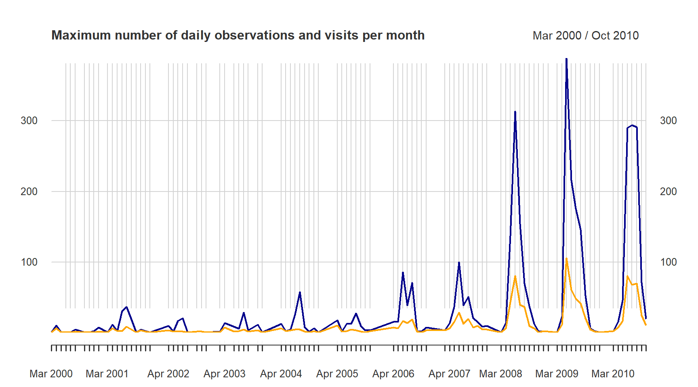
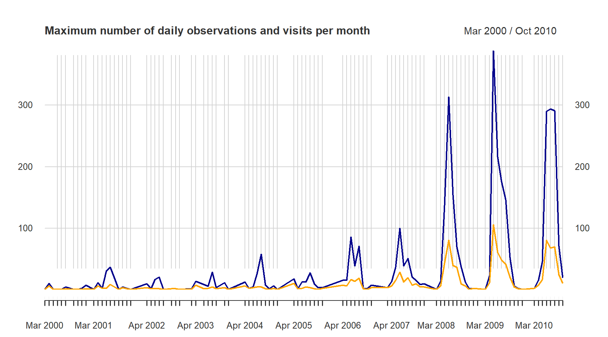

2 Example with opportunistic data on Dragonflies
In this example we are interested in exploring opportunistically collected data from the Swedish citizen science observation data portal - Artportalen.
2.1 Name searching
To begin, we want be sure there is an unequivocal way to find the species within the order Odonata and nothing else, so let’s search for it:
sx <- search_fulltext("odonata")
sx$data[, c("guid", "scientificName", "rank", "occurrenceCount")]## [1] "https://species.biodiversitydata.se/ws/search.json?q=odonata&fq=idxtype%3ATAXON"## guid scientificName rank occurrenceCount
## 1 9829523 Odonata associated gemycircularvirus 1 species 0
## 2 10072832 Odonata associated gemycircularvirus 2 species 0
## 3 8062407 Bdellodes odonata Wallace & Mahon, 1976 species 0
## 4 789 Odonata order 207680
## 5 7367071 Ramalina fastigiata var. odonata Hue variety 0We quickly see there that other taxonomic definitions appear too, but there is
only one order. Let’s refine the search. To know which search fields we can use
to filter the search we use the function sbdi_fields(fields_type = "general").
The search field we are looking for is “order_s.”
sx <- search_fulltext(fq="order_s:Odonata", page_size = 10)
sx$data[, c("scientificName", "rank", "occurrenceCount")]## [1] "https://species.biodiversitydata.se/ws/search.json?fq=order_s%3AOdonata&fq=idxtype%3ATAXON&pageSize=10"## guid scientificName rank occurrenceCount
## 1 1429753 Gomphomacromia Brauer, 1864 genus 1
## 2 1426725 Austropetalia Tillyard, 1916 genus 0
## 3 4799335 Sogjutella Pritykina, 1980 genus 0
## 4 4302686 Neuragrion Karsch, 1891 genus 0
## 5 4799353 Xamenophlebia Pritykina, 1981 genus 0
## 6 1429769 Lauromacromia Geijskes, 1970 genus 0
## 7 1428195 Sympetrum Newman, 1833 genus 27050
## 8 4798599 Corduliochlora Marinov & Seidenbusch, 2007 genus 0
## 9 1423625 Torrenticnemis Lieftinck, 1949 genus 0
## 10 1423468 Cyanallagma Kennedy, 1920 genus 0Now we can download the taxonomic data (note that the search is case-sensitive):
tx <- taxinfo_download("order_s:Odonata",
fields = c("guid", "order_s","genus_s", "specificEpithet_s",
"scientificName", "canonicalName_s", "rank"),
verbose = FALSE)
tx <- tx[tx$rank == "species" & tx$genusS != "",] ## restrict to species and not hybridsThen you can save tx as the complete species list for later use.
2.2 Filter the search to get the observations
As usual we start by searching for the data resource we are interested in using
the function pick_filter(). This is an interactive query guiding you through
the many resources available to filtering your query (data resources, spatial
layers, and curated species lists).
# follow the instructions
fq_str <- pick_filter("resource") Follow the instruction. Your choices here would have been “in3” –> “dr5.”
Your variable fq_str will now contain a string “data_resource_uid:dr5.”
We only need data from 2000 to 2010
y1 <- 2000
y2 <- 2010
fq_str <- c(fq_str, paste0("year:[", y1, " TO ", y2,"]"))
# Note the square brackets are hard limitsWe also need to filter spatially for Southern Sweden (Götaland).
Vector spatial layers (eg. polygons) can be imported in a number of different ways.
SBDI APIs take as search input polygons in the s.k. WKT Well Known Text
format. So the first step is to load a vector layer and transform it into a WKT string.
You could instead use the data we kindly provided in the SBDI4R package data("swe").
data("swe",package = "SBDI4R")
wGotaland <- swe$Counties$LnNamn %in% c("Blekinge", "Gotlands", "Hallands",
"Jönköpings", "Kalmar", "Kronobergs",
"Östergötlands", "Skåne", "Västra Götalands")
gotaland_c <- swe$Counties[wGotaland,]There are details about this polygon that we need to take care before. The WKT string should not be too long to be accepted by the API service. Also, the polygon we just got is projected in the coordinate system SWEREF99 TM, and the API service only accepts coordinates in a geodesic coordinate system WGS84. Let’s construct the WKT string:
# transform the CRS
gotaland_c <- sf::as_Spatial(
sf::st_transform(
sf::st_as_sf(gotaland_c),
crs = sf::st_crs(4326)$wkt) )
# disolve the counties into one polygon
gotaland <- rgeos::gUnaryUnion(gotaland_c)
# extract the polygons coordinates
nPol <- length(gotaland@polygons[[1]]@Polygons)
lonlat <- list()
for(p in seq(nPol)){
lonlat[[p]] <- gotaland@polygons[[1]]@Polygons[[p]]@coords
}
lonlat <- do.call(rbind, lonlat)
# create a convex hull of the polygon to simplify the geometry and
# reduce the length of the WKT string
gotaland_ch <- chull(lonlat)
lonlat <- lonlat[c(gotaland_ch, gotaland_ch[1]), ]
# create WKT string
# first join each lon-lat coordinate pair
wkt_temp <- apply(lonlat, 1, function(z) paste(round(z,4), collapse=" "))
# now build the WKT string
wkt <- paste("MULTIPOLYGON(((", paste(wkt_temp, collapse=","), ")))", sep="")
# NOTE: as of today, the SBDI APIs will only work properly if the polygon is
# submitted as a MULTIPOLYGONThe WKT string the looks like this
wkt## [1] "MULTIPOLYGON(((18.9004 57.4401,18.867 57.3975,18.3725 57.0068,18.3004 56.9528,16.408 56.2023,14.1906 55.3856,13.3357 55.34,12.8163 55.3859,11.2534 58.3579,11.1316 58.9094,11.1314 59.0118,11.2114 59.0897,11.3157 59.1165,11.8203 59.2355,11.9483 59.2624,12.062 59.2716,12.231 59.2736,15.7938 59.0388,15.8431 59.025,19.2889 57.9904,19.3058 57.9689,18.9004 57.4401)))"
Next, we download the observations using the command occurrences(), but be aware that
the search fields may not be the same as those use to search for taxa. We therefore
recommend using the function sbdi_fields("occurrence"). Here see that the field
we need this time is “order.”
xf <- SBDI4R::occurrences(taxon = "order:Odonata",
fq = fq_str,
wkt = wkt,
extra = "collector",
email = "sbdi4r-test@biodiversitydata.se",
download_reason_id = 10)We have now downloaded the data locally and depending on your configuration this will be cached on your computer. However, as the search and download could take long, we recommend to anyhow save the data locally.
save(xf, file = "an_approprieted_name.rdata")
load(file = "an_approprieted_name.rdata")2.3 Quality and fit-for-use check
Before we can use the observation records we need to know if the observation effort has varied over time and in space. For this we need to define field visits i.e. occasions at which an observer has sampled observations, and reconstruct them (that is, assign each observation a visitUID). We do this using the package BIRDS. We even want the data to be summarized over a grid of 25 km (provided by the SBDI4R package). The following functions will perform many different summaries at the same time. Please refer to the package documentation for more detail.
library(BIRDS)
OB <- organiseBirds(xf$data, sppCol = "species" ,
# We only want observations identified at the species level
taxonRankCol = "rank", taxonRank = "species",
# the visits are defined by collector and named locality
idCols = c("locality", "collector"),
timeCols = c("year", "month", "day"),
xyCols =c("longitude","latitude") )## 252 observations did not match with the specified taxon rank and were removed.# We don't need the whole grid, just the piece that overlaps our searching polygon
gotaland_grid25 <- raster::intersect(gotaland, Sweden_Grid_25km_Wgs84)
# This is another way of doing it.
# gotaland_grid25 <- gIntersection(gotaland,
# spTransform(Sweden_Grid_25km_Wgs84,
# CRSobj = CRS(sf::st_crs(4326)$wkt)))
SB <- summariseBirds(OB, grid = gotaland_grid25, spillOver = "unique")## 1664 observations did not overlap with the grid and will be discarded.## 0.009 % of the visits spill over neighbouring grid cells.Once summarized, we can see over space and for a few selected year how was the sampling effort (in this case number of observations) distributed.
maxC <- max(SB$spatial@data$nObs, na.rm = TRUE)
palBW <- leaflet::colorNumeric(c("white", "navyblue"),
c(0, maxC),
na.color = "transparent")
oldpar <- par()
par(mar = c(4,0,4,0), mfrow=c(1,3))
plot(SB$spatial, col=palBW(SB$spatial@data$nObs),
border = "grey", main="All years") ## with palette
legend("bottomleft", inset = c(0,0.05),
legend = round(seq(0, maxC, length.out = 5)),
col = palBW(seq(0, maxC, length.out = 5)),
title = "Number of \nobservations", pch = 15, bty="n")
## or export other combinations, e.g. one map per observed year
yearlySp <- exportBirds(SB,
dimension = "spatial",
timeRes = "yearly",
variable = "nObs",
method = "sum")
maxC <- max(yearlySp@data$'2005', na.rm = TRUE)
palBW <- leaflet::colorNumeric(c("white", "navyblue"),
c(0, maxC),
na.color = "transparent")
plot(yearlySp["2005"], col=palBW(yearlySp@data$'2005'),
border = "grey",main="2005")
legend("bottomleft", inset = c(0,0.05),
legend = round(seq(0, maxC, length.out = 5)),
col = palBW(seq(0, maxC, length.out = 5)),
border = "grey",
title = "Number of \nobservations", pch = 15, bty="n")
maxC <- max(yearlySp@data$'2010', na.rm = TRUE)
palBW <- leaflet::colorNumeric(c("white", "navyblue"),
c(0, maxC),
na.color = "transparent")
plot(yearlySp["2010"], col=palBW(yearlySp@data$'2010'),
border = "grey",main="2010")
legend("bottomleft", inset = c(0,0.05),
legend = round(seq(0, maxC, length.out = 5)),
col = palBW(seq(0, maxC, length.out = 5)),
border = "grey",
title = "Number of \nobservations", pch = 15, bty="n")
par(oldpar)
There are other ways to plot spatial data, here there is another example this time
using the package sf instead of sp and using number of visits as the measure
for sampling effort.
library(sf)
library(cowplot)
library(ggplot2)
library(colorRamps)
library(gridExtra)
spatial_sf <- st_as_sf(SB$spatial)
vis <- ggplot(data = spatial_sf, aes( fill = nVis)) +
geom_sf() +
ggtitle("Visits") +
scale_fill_gradient(low = "#56B1F7",
high = "#132B43",
na.value = NA) +
theme(plot.margin = margin(1, 1, 1, 1, "pt")) +
theme_cowplot()
spp <- ggplot(data = spatial_sf ,aes( fill = nSpp))+
geom_sf()+
ggtitle("Number of species")+
scale_fill_gradient(low = "#56B1F7",
high = "#132B43",
na.value = NA) +
theme(plot.margin = margin(1, 1, 1, 1, "pt")) +
theme_cowplot()
grid.arrange(vis, spp, ncol=2)
We see that SB contains an element called SB$temporal that contains a daily
time series with time specific rows when there is information. xts also supports
time, but dating below day resolution is not yet implemented in the BIRDS package.
sb.xts <- SB$temporal
dim(sb.xts)## [1] 1118 3head(sb.xts, 20)## nObs nVis nSpp
## 2000-03-24 1 1 1
## 2000-04-05 4 3 3
## 2000-04-06 11 6 3
## 2000-04-10 1 1 1
## 2000-04-12 3 3 1
## 2000-04-13 8 5 2
## 2000-04-20 1 1 1
## 2000-04-21 5 4 2
## 2000-04-23 5 2 3
## 2000-04-24 7 5 2
## 2000-04-26 1 1 1
## 2000-04-27 7 6 3
## 2000-04-28 9 7 3
## 2000-04-29 6 3 3
## 2000-05-27 1 1 1
## 2000-06-03 1 1 1
## 2000-07-30 1 1 1
## 2000-08-03 1 1 1
## 2000-08-05 5 2 5
## 2000-08-06 3 1 3Sub-setting is convenient in xts as you can do it with its dates and with a /
for a range of dates.
sb.xts["2010-09-07"] #a specific day## nObs nVis nSpp
## 2010-09-07 9 7 5sb.xts["2010-09-01/2010-09-15"] #for a period## nObs nVis nSpp
## 2010-09-01 38 15 14
## 2010-09-02 26 12 12
## 2010-09-03 20 9 10
## 2010-09-04 63 19 18
## 2010-09-05 71 25 12
## 2010-09-06 16 4 9
## 2010-09-07 9 7 5
## 2010-09-08 13 6 8
## 2010-09-09 32 12 14
## 2010-09-10 1 1 1
## 2010-09-11 15 8 8
## 2010-09-12 15 7 8
## 2010-09-13 14 5 9
## 2010-09-14 1 1 1
## 2010-09-15 3 3 2sb.xts["2010-09"] #a specific month## nObs nVis nSpp
## 2010-09-01 38 15 14
## 2010-09-02 26 12 12
## 2010-09-03 20 9 10
## 2010-09-04 63 19 18
## 2010-09-05 71 25 12
## 2010-09-06 16 4 9
## 2010-09-07 9 7 5
## 2010-09-08 13 6 8
## 2010-09-09 32 12 14
## 2010-09-10 1 1 1
## 2010-09-11 15 8 8
## 2010-09-12 15 7 8
## 2010-09-13 14 5 9
## 2010-09-14 1 1 1
## 2010-09-15 3 3 2
## 2010-09-17 3 2 3
## 2010-09-18 9 5 5
## 2010-09-19 12 7 5
## 2010-09-21 3 2 3
## 2010-09-22 4 4 2
## 2010-09-23 3 3 2
## 2010-09-24 10 5 5
## 2010-09-25 6 3 6
## 2010-09-26 7 6 2
## 2010-09-28 2 2 2
## 2010-09-29 5 3 4
## 2010-09-30 2 2 2The package xts has several tools for converting to different periods. Here we
will use to.monthly. This provides, the first, min, max, and last of the data.
We can plot the daily maximum number of observations. The plot command with an
xts object provides a TON of features. This makes it fairly easy to customize
your plots. Read more in ?plot.xts.
library(xts)
obs.m <- to.monthly(sb.xts$nObs)
plot(obs.m["2000/2010",2],
col = "darkblue",
grid.ticks.on = "month",
major.ticks = "month",
grid.col = "lightgrey",
main = "Maximum number of daily observations/visits per month")
vis.m <- to.monthly(sb.xts$nVis)
lines(vis.m["2000/2010",2], col = "orange", lwd=2)## Warning: package 'xts' was built under R version 4.0.4## Loading required package: zoo## Warning: package 'zoo' was built under R version 4.0.4##
## Attaching package: 'zoo'## The following objects are masked from 'package:base':
##
## as.Date, as.Date.numeric##
## Attaching package: 'xts'## The following objects are masked from 'package:dplyr':
##
## first, last## The following object is masked from 'package:leaflet':
##
## addLegend 

We can now look at some particular species and ask whether this has changed in occurrence over time: Plot no. records of species x and no. visits all species over years (we simply explore by comparing records for a species with no visits, can assume that species has increased of stronger positive trend than for no. visits)
Plot no. gridcells with visits for species x and no. gridcells with visits for all species over years (we simply explore by comparing records for a species with no visits, can assume that species has increased of stronger positive trend than for no. visits) (species x: Tvåfläckad trollslända Epitheca bimaculata)